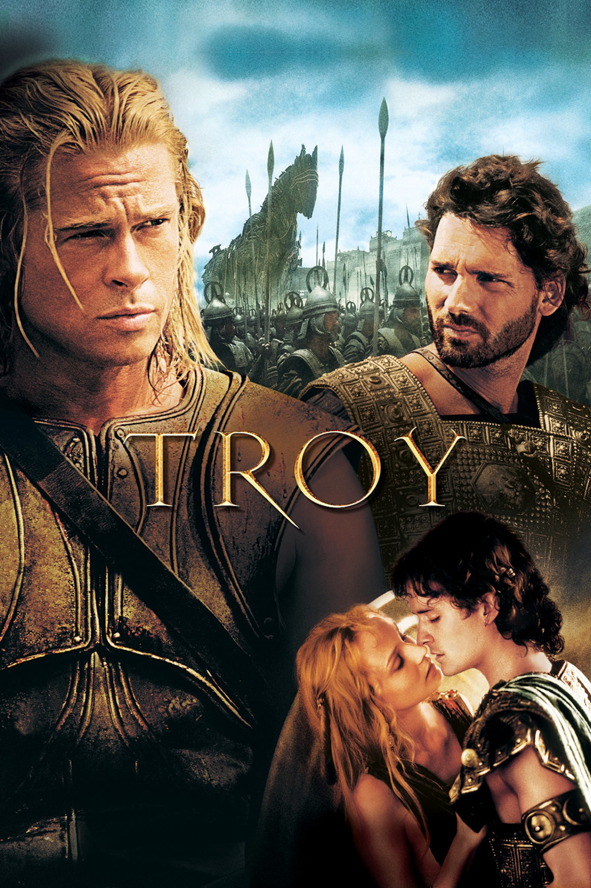

Мировая премьера: 14 мая 2004
Слоган: За Трою.
Сюжет: После того, как троянский царевич Парис влюбился в спартанскую царицу Елену и похитил её, два мира сошлись в страшной битве под стенами неприступной Трои... Это была невероятно жестокая схватка, где было суждено сложить головы многим великим мужам прошлого. Это был смертельный поединок двух лучших воинов древности – ветерана многих сражений, отважного троянского царевича Гектора и неуязвимого грека Ахиллеса, которого почитали самым великим бойцом античного света.
Режиссёр: Вольфганг Петерсен
В основе: Поэма Гомера "Илиада" (Древняя Греция, 8 в. до н.э.) и поэма Виргилия "Энеида" (Древний Рим, 1 в. до н.э.)
В ролях: |
Брэд Питт | Ахиллес |
| Эрик Бана | Гектор | |
| Брайан Кокс | Агамемнон | |
| Орландо Блум | Парис | |
| Питер О'Тул | Приам | |
| Шон Бин | Одиссей | |
| Брендан Глисон | Менелай | |
| Роуз Бирн | Брисеида | |
| Диана Крюгер | Елена | |
| Винсент Риган | Эвдор | |
| Саффрон Бёрроуз | Андромаха | |
| Джули Кристи | Фетида |
|
| Гаррет Хедлунд | Патрокл | |
| Джон Шрэпнел | Нестор | |
| Джеймс Космо | Главк | |
| Найджел Терри | Архептолем |
|
| Джулиан Гловер | Триоп | |
| Тревор Ив | Велиор | |
| Тайлер Мэйн | Аякс |
Бюджет: $ 175 млн.
Кассовые сборы в США: $ 133 млн.
Кассовые сборы в мире: $ 497 млн.
Продолжительность: 2 ч. 33 мин.
Рейтинг: 7.3